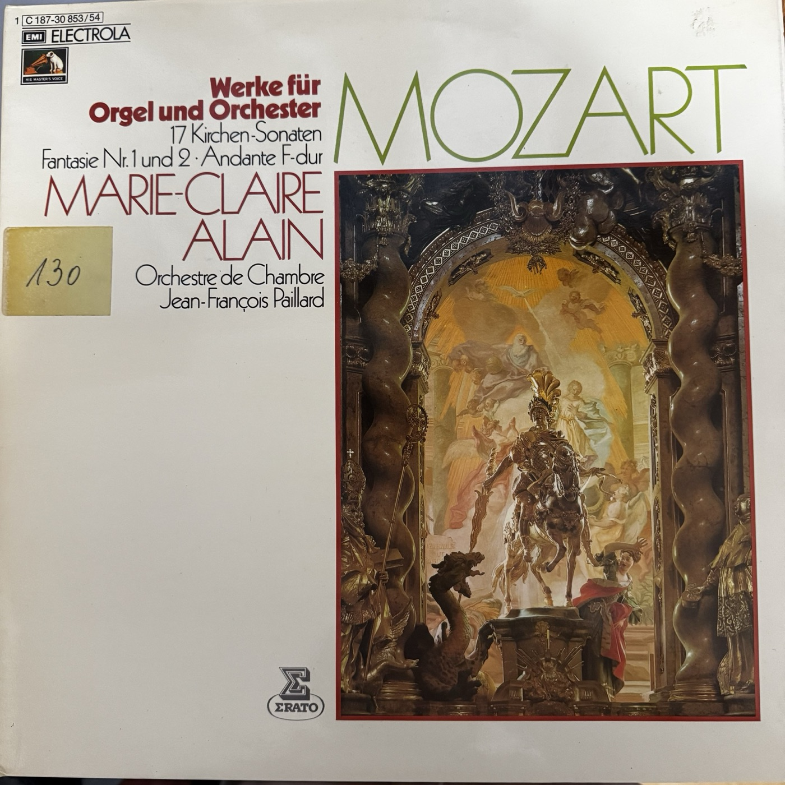

沃尔夫冈·阿马德乌斯·莫扎特
Wolfgang Amadeus Mozart · 1756–1791
教堂奏鸣曲写于他的萨尔茨堡时期，是为弥撒中短暂的器乐段落而作的单乐章作品。两首幻想曲和 F 大调行板则源于晚年的机械管风琴作品；这张唱片里，它们由真人在管风琴上演奏。
Werke für Orgel und Orchester
前几面是萨尔茨堡弥撒里的短篇，翻到最后一面，却遇见两首阴郁而宏阔的 F 小调幻想曲。听听同一位演奏家如何让管风琴从托住弦乐，变成独自撑起整首作品。
按唱片顺序开始听 ↓
Wolfgang Amadeus Mozart · 1756–1791
教堂奏鸣曲写于他的萨尔茨堡时期，是为弥撒中短暂的器乐段落而作的单乐章作品。两首幻想曲和 F 大调行板则源于晚年的机械管风琴作品；这张唱片里，它们由真人在管风琴上演奏。
Marie-Claire Alain · 1926–2013
法国管风琴家，以巴赫管风琴作品录音闻名。封套注明，教堂奏鸣曲用 Haerpfer-Erman 小型管风琴；行板与幻想曲用法国阿格诺圣尼古拉教堂的 Haerpfer-Erman 管风琴。
Jean-François Paillard · 1928–2013
法国指挥，与以他名字命名的室内乐团合作演出本辑的教堂奏鸣曲。听弦乐如何用短句推动节奏，再留意管风琴在不同作品里何时衬底、何时走到前面。
可以按下列顺序跳着听。每条都标了唱片面和该面顺序，方便在唱机旁对照。
少见的行板。先听弦乐短句怎样起落，再把注意力移到低音：管风琴融入合奏时，往往更容易听见和声的支撑，而不是一条独立的旋律。
第 2 面 · 第 2 首 ↓与 K.67 对照，管风琴在这里有明显的独奏角色。听乐队合奏与键盘花句交接，尤其留意临近结尾的华彩：短短一首教堂奏鸣曲，已经有了小协奏曲的味道。
第 2 面 · 第 1 首 ↓这一面最后，乐队退场。沿着管风琴上方的歌唱旋律听，留意装饰音怎样围绕长线条打转。试着先哼主旋律，再听装饰音，你会更容易听出句子的方向。
第 3 面 · 第 5 首 ↓开头的庄重节奏过后，留意同一主题如何从一个声部传到另一个声部。中间行板放松了紧张感；快段回归时，再听那些交织的线条如何把音乐推向结尾。还可以接着听 K.594：它让慢板在结尾重现，像把开头的阴影重新合上。
第 4 面 · 第 1 首 ↓按封套顺序排列。把唱针放到相应一面，展开这一面，就可以从第一首往下读。每首先给一个听点，再说明到哪里、听什么。K. 与封套的 KV 都是克歇尔目录号。
听全套里最隆重的开场
小号和定音鼓给 C 大调加上了节庆的色彩。先记住全乐队齐奏的轮廓，再等管风琴的快速音群浮出来：前者靠重音和声势划分句子，后者用连续的音符穿过这些重音。同样是管风琴独奏突出的作品，可拿它和第 2 面的 K.336 比：这里最鲜明的是键盘与大编制之间的反差。
听短句怎样接成一口气
从 K.329 转到这首时，把耳朵从齐奏的声势收回到第一小提琴。试着只跟上声部，听一句末尾怎样引出下一句；再跟一遍低音，找出哪里已经有了落脚感、哪里仍在向前。篇幅虽短，几次暂歇和重新起步就足以让音乐有方向。
听快板里的标点
用低音数拍，再听上面的短动机怎样在拍点之间活动。快速进行中的收束像一句话的逗号，随后弦乐又把势头接起来。它和同面的 K.245 都是 D 大调，连听时可以比较：同一个调，句尾给人的停顿感并不一样。
听高声部与低音的分工
把明亮的高声部当成说话的人，把低音当成脚步。旋律可以在一句里转弯，低音却还在向前，直到两者在终止处一起落地。听这一首时，试着只记最初那句的轮廓，等熟悉的句法重新出现，会更容易把握全曲。
听旋律怎样越过小节线
不妨先跟着第一小提琴哼，把重音后继续往前的音也连起来。这样听，快板不会变成一串等重的拍子。再听低音的支撑，留意上声部唱得轻巧时，下方如何把调性变化和收束交代清楚。
听结束感是怎样积累的
把它与前面的 K.69 连听。两首都是 D 大调快板，这次把注意力放在乐句的后半截：短音型还在往前推，低音与和声已在为落点铺路。试着分辨一次段落内的暂歇与最后真正停下来的区别。
听一首微型协奏曲
先听乐队定下基调，再听管风琴用跑动的音群接过主角。最容易认出的路标是近尾声的独奏华彩：合奏的推进暂时让位给键盘，随后乐队回来收束。紧接着的 K.67 会把管风琴重新放回伴奏的位置。
听行板里的呼吸
速度放慢后，旋律每次抬起和落下都更清楚。沿着弦乐听完一个完整乐句，再把注意力转到下面的低音和和声：管风琴的支撑融在织体里，适合用来对照刚刚走到前台的 K.336。
听两把小提琴构成的层次
先追上方跑动的线条，再留意它下面较近的那一层，别把弦乐听成一个声部。快板的轻快来自各声部都在活动，而句尾的合拢让这些线条暂时聚到一起。
备查：降 B 大调教堂奏鸣曲 K.212
若盘标或实际播放确认这首在盘上，可用它与同面的 K.68 对照。同为降 B 大调快板，先听小提琴短句的起落，再换到低音，找出和声换向和回到主调时的落脚感。此条不代表已确认第 4 首就是 K.212。
听小号怎样为合奏加亮
和前几首小编制曲目相比，这里原谱加入两支小号。听齐奏时，可以把小号造成的明亮轮廓和弦乐的运动分开；它们在音响上为合奏加亮，也让乐句落点更有分量。再和第 1 面 K.329 的小号加定音鼓做比较。
听短篇如何一气呵成
先记下开头的弦乐语气，再听中途的停顿到底是句号，还是把音乐推向下一句的逗号。前一首 K.263 的编制比较显眼，到了这里可以改听较精简的弦乐和低音怎样完成同样清楚的起、承、收。
听 con spirito 的劲头
封套写着「有精神的快板」。别只跟速度，试着跟住短音的起音和重音，感受一次次向前弹起的劲头；再听句尾是否仍保有同样的弹性。放在这面的最后，它的活力来自发音和推进。
听没有铜管的大调亮度
第 3 面用 C 大调开场，可以和第 1 面同为 C 大调的 K.329 对听。这里把注意力放在弦乐清楚的起音，以及上方旋律如何从低音的支撑上亮起来。无需等一个宏大的高潮，明亮感就在短句的推进里。
听管风琴怎样嵌进合奏
留意键盘线条怎样从弦乐中浮出，又怎样交回给合奏。尤其可听弦乐句尾和键盘接话处的衔接。与 K.336 的华彩相比，这首更适合听键盘在小编制里的来回应答。
听音色如何分层
这是有双簧管、小号与定音鼓参与的 C 大调奏鸣曲。可以先找双簧管偏圆的吹奏声，再听小号的亮度和定音鼓在低处给出的重音。较丰富的配器让礼仪感更鲜明，弦乐仍在里面带着乐句向前走。
听最后一首合奏的轻重
从 K.278 的丰富配器退回小编制，听小提琴怎样用轻起音和明确的落点维持活力。顺着盘面继续到 K.616，比较弦乐的弓头怎样消失，换成管风琴一人持续送出的气息。
听装饰音背后的长线
这是为机械风琴写的行板，这里由阿兰独奏。先在心里哼上方的主旋律，把细碎的装饰音当作绕行；再听这些绕行怎样延迟旋律的落点。下方声部即使在动，仍托住上声部从一句唱到下一句。
听赋格怎样把紧张感带回来
快段的强烈开头之后，听同一个主题从不同高度相继进入；前一个声部会继续走，新的声部在它旁边加入，这就是可以用耳朵辨认的赋格写法。中间较明朗的行板给耳朵留了空间。末段重回快板时，留意主题重现后多条线怎样在同一时间彼此咬合。
听同一片阴影在尾声回来
全曲可以按「慢—快—慢」听。开头慢板的节奏和和声显得沉重，中段快板的流动把音乐从静止中推开；最后慢板回来时，试着想起开头的重量。和 K.608 相反，这首由慢段框住全曲，速度回落本身就是结尾最醒目的事件。
背面注明录音工程师为 Daniel Madeleine；封面照片署名 H. Steinmetz，地点为德国韦尔滕堡修道院（Kloster Weltenburg）。背面标示在德国印刷。上方的 1973 年是封套所印录音版权年份。
作品对照：IMSLP 莫扎特作品与乐谱 · 教堂奏鸣曲编号表